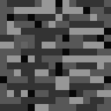
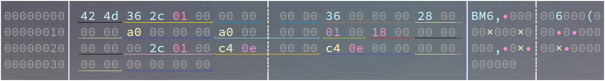

Bmp文件结构详解
- 2022/08/27 16:00:00
前言(废话)
欢迎纠错:
Bilibili : Maouai233
Mail : Maouai233@outlook.com
最近(指这几个月...),在研究UEFI的GraphicsOutputProtocol的时候,图像显示我一直是很蒙的,于是我刨根问底,还是刨出来了这篇文章......
注意
本文章使用标准的、最通用的Bmp图像试验,位图信息头使用BITMAPINFOHEADER.不经过如哈夫曼算法压缩像素数据的图像.也会说明调色板的使用
正文
示例图像: (本文bedrock.bmp指此图文件名)

结构
概览Overview
在安装hexyl的前提下使用hexyl -c 54 bedrock.bmp即可看到我们使用Bmp时不可或缺的数据——位图文件头(Bitmap File Header)和位图信息头(Bitmap Info Header),它们共占54个字节(12 + 40):

二维数组.整型均以小端存储序存储.
| 位置(相对文件开头偏移字节) | 数据类型 | 大小(字节) | 作用 | 默认值 | 名称(可供C语言等参考) |
|---|---|---|---|---|---|
| 1 | 字符型 | 1 | 标识此图为Bmp位图文件 | 0x42(ASCII即'B') | CharB |
| 2 | 字符型 | 1 | 标识此图为Bmp位图文件 | 0x4D(ASCII即'M') | CharM |
| 3 ~ 6 | 32位无符号整型 | 4 | Bmp整个文件的大小(包括Bmp File Header等) | Size | |
| 7 ~ 8 | - | 2 | 保留 | 视具体情况而定,一般为 0 | Reserved1 |
| 9 ~ 10 | - | 2 | 保留 | 视具体情况而定,一般为 0 | Reserved2 |
| 11 ~ 14 | 32位无符号整型 | 4 | 记录像素数据相对于整个文件开头的偏移字节 | 视具体情况而定,24bit位图一般为54 | ImageOffset |
| 15 ~ 18 | 32位无符号整型 | 4 | Bitmap Info Header 大小(字节) | 40 | HeaderSize |
| 19 ~ 22 | 32位整型 | 4 | 位图宽度(像素),但不可为负(正常情况下大多软件不支持包括ffplay) | 正整数值 | Width |
| 23 ~ 26 | 32位整型 | 4 | 位图高度(像素),如果为负数,具体见下文"像素存储"... | Height | |
| 27 ~ 28 | 16位无符号整型 | 2 | 必须是 1,Wiki上写的是色彩平面数 | 1 | Planes |
| 29 ~ 30 | 16位无符号整型 | 2 | 像素所占位数,也就是图像位深、色深,值可能为1、4、8、24、32.如32bit用4字节存储一个像素 | ImageBits | |
| 31 ~ 34 | 32位无符号整型 | 4 | 压缩方式(本文不展开叙述) | 0 | CompressionType |
| 35 ~ 38 | 32位无符号整型 | 4 | ImageSize | 见下 | ImageSize |
| 39 ~ 42 | 32位无符号整型 | 4 | 横向分辨率(像素/米) | HorizontalResolution | |
| 43 ~ 46 | 32位无符号整型 | 4 | 竖向分辨率(像素/米) | VerticalResolution | |
| 47 ~ 50 | 32位无符号整型 | 4 | 调色板颜色数,等于"2^位深",即2的位深值的次方个, 24Bit以上由于直接存储BGR(或BGRA)值,调色板个数为0 | \(2^{位深}\) | PaletteColorsNum |
| 51 ~ 54 | 32位无符号整型 | 4 | 重要颜色数,为0则是全部颜色都很重要 | 0 | ImportantColorsNum |
偏移ImageOffset
Bmp像素数据起始位置相对于文件起始处的偏移.一般的:
\(ImageOffset=54+4\times PaletteColorsNum\)
假若bedrodk.bmp在内存中文件起始位置为BmpRaw,则像素数据起始位置为PixelStart = BmpRaw + ImageOffset
位深ImageBits
Bmp位深多少,即用多少各Bit存储一个像素.
如1Bit使用0.125个字节存储一个像素,其余的按四字节对齐(不足的按四字节算).
在一定范围内,位深越大,带给人的感受越真实.
32Bit的Bmp位图,使用BGRA即[Blue,Green,Red,Alpha]进行对像素的存储,比24Bit位图的BGR多了一条Alpha通道.
调色板BmpColorMap
每个调色板占用4个字节,存储格式为BGRR,即[Bule,Green,Red,Reserved],每个值都是8Bit无符号整型(即unsigned char).下面C/C++的定义应该更加直观.
相当于一个索引,打个比方:
在一张8Bit的Bmp位图中,使用8个Bit即1字节存储一个像素.那么一个像素需要一个字节存储,则一个字节可存储0 ~ 255的无符号整型数据.如果有一个字节存储的值是255,则对应的第255个调色板BGRR值为 [0xFF 0xFF 0xFF 0x00].
一般情况下，需要"翻译"成24Bit或32Bit.具体见下文.
一张24Bit或32Bit的Bmp位图不存在调色板,因为它们直接存储像素的具体BGR或BGRA值,则\(PaletteColorsNum = 0\)
文件大小Size
\(Size = 54 + ImageSize + PaletteColorsNum \times 4\)
其中,4指的是每个调色板占用的字节数,54指的是Bmp文件头和位图头的总大小.
调色板个数PaletteColorsNum
在ImageBits不为24或32的情况下(具体见上文-调色板BmpColorMap):
\(PaletteColorsNum = 2^{ImageBits}\)
为24或32时:
\(PaletteColorsNum = 0\)
对齐后像素数据大小ImageSize
用数学公式说有点迷糊(我也还没学MOD)
要对齐时:
\(RowSize=\frac {Width\times ImageBits} {8} +4 - (\frac {Width\times ImageBits} {8} \mod 4)\)
不用对齐时:
\(RowSize = \frac {Width\times ImageBits} {8}\)
对于所有情况,都有:
\(ImageSize=Height\times RowSize\)
RowSize即储存一行的像素数据所需要的字节数.
ImageSIze代表一张Bmp图像储存像素区域所占的字节数.
要对齐时的情况推导:
Bmp图像在储存数据时,记录范围内的每个像素(或调色板信息),会进行四字节对齐(不满四字节按四字节算).
则储存一行时不对齐情况下的字节数是:\(\frac {ImageBits} 8\times Width\)
不考虑多出字节进行4字节对齐时,多出字节数为:\((\frac {ImageBits} 8\times Width) \mod 4\)
则考虑多出字节进行4字节对齐时,需补齐字节数为:\(4-[(\frac {ImageBits} 8\times Width) \mod 4]\)
则一行占用: \(RowSize=\frac {Width\times ImageBits} {8} +4 - (\frac {Width\times ImageBits} {8} \mod 4)\)
再回去想想就行了...(指去上文QwQ)
宽度Width & 高度Height
Width不可为负数.
Height可为负数.影响见下文.
像素存储
正常情况下,Bmp会形成一个\(Width \times Height\)大小的数组,这里称BmpRaw,存在对齐情况,实际描述为二维数组,但在存储或读取时大多使用线型.
Height为正数时,实际平面内最左上角的数据起始位置在BmpRaw的最后行的第一列,即BmpRaw[(Height - 1)*Width + 1],为负数则在BmpRaw的第一行的第一列,即BmpRaw[0].
读取&使用方案梗概
读取
可以把BmpFileHeader和BmpInfoHeader合并为一体,称BMP_IMAGE_HEADER,C/C++可用结构体,较为方便.
可以通过两种方式读取:
-
根据占用大小,依次读取数据放入结构体中.
-
直接读取进入结构体,这就是为什么加入预处理指令
#pragma pack(1)和#pragma pack()使结构体不进行字节对齐.
"翻译"
一般情况下,24Bit的像素数据或类似24Bit像素数据会比较通用.比如UEFI下Blt函数传输(EfiBufferToVideo,从缓冲区到屏幕)的BltBuffer,使用BGRR即[Blue,Green,Red,Reserved]的格式,32、24Bit以外的都不是直接存储像素RGB值,使用调色板翻译就是一件必不可少的工作.
针对图像会倒转的问题,可以这样解决: 1. 在"翻译"阶段将数据根据实际情况进行摆放.
- 在"翻译"阶段跑完后对数据根据实际情况进行翻转.定义一个函数如:BmpTransform
数据?拿来吧你!
资源附
16位深的转换等我写完才去研究,其他的就等一下放我的Edk2项目的源码吧......咕咕咕咕咕咕咕咕咕咕咕咕咕咕咕咕咕咕
[AARCH,ARM,X64,IA32] Bmp位图检查程序BmpChecker及源代码: https://pan.baidu.com/s/1EUXCNEz7yGbVPIlCPng0Fw?pwd=2333 适用于UEFI的Bmp位深转换: https://gist.github.com/ljQAQ233/5eaf1c600fcbb773749150efc73ab575